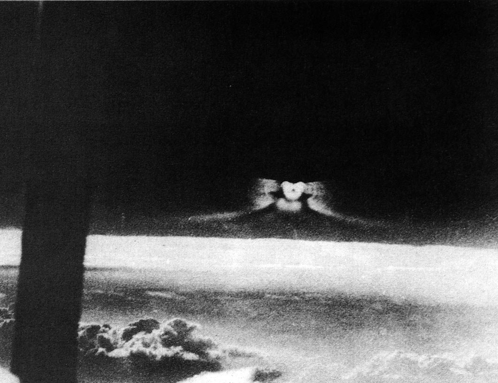

Bientôt des "bases de missiles dans le ciel !" selon le Lion Book of War Adventures
de cette année-là (imprimé pour la 1ʳᵉ fois en ), la capacité de voyager sur terre et sur
mer à grande vitesse fera de l'aéroglisseur une arme importante du futur. Mû par des moteurs à super-réaction
et construits à des tailles énormes, leurs rôles seront nombreux et variés. Des détecteurs d'aéroglisseurs
audio sous-marins dérivants dans la mer joueront un rôle important dans la défense des routes commerciales de
la Grande-Bretagne dans une guerre futureManic: "Missile
Bases in the Sky!", Bloggerheads, 22 janvier 2008.
Début de l'année Le réservoir de carburant de Groom Lake est
terminé, avec une capacité de 1320000 gallons McIninch.
L'espace aérien restreint juste au-dessus de Groom Lake (R-4808) est étendu à 22 miles nautiques par 20. A la base de cette extension se trouve une
requête du Département de l'Air Force citant un besoin immédiat et urgent pour un projet secret. Ceci crée la
"boîte Groom" telle qu'elle existe aujourd'hui Registre Fédéral (27 FR 205).
les forces magnétiques entourant la Terre, et capables de changer de direction en une fraction de
seconde, des soucoupes volantes seront capables de dévier des missiles vers leurs bases de lancement selon le
Lion Book of War Adventures de cette année-là (imprimé pour la 1ʳᵉ fois en ) Manic: "Missile
Bases in the Sky!", Bloggerheads, 22 janvier 2008
Prétendue récupération de 2 corps suite à un crash à la base d'Holloman (Nouveau-Mexique).
À Vérone (Italie), à la suite d'une observation d'ovni, une femme est réveillée par
une sensation de froid intense et voit près de la maison un êêauve. Elle appelle d'autres témoins et tous
voient l'apparition rapetisser et disparaîîr place comme une image de télévision lorsqu'on éteint
l'appareil.
Observation à Indianapolis (Indiana)Cas Blue Book n° 7957 non résolu.
Observation à Richmond (Virginie)Cas Blue Book n° 7968 non résolu.
Le , lors d'un vol de Sappora (Japon) vers Tokyo, Yusuke Matsumura remarque un immense appareil en
forme de disque légèrement brumeux et aux contours vaguesSTEVENS & ROBERTS (1985).
Observation au WSW de Biloxi (Mississippi) Cas Blue Book n°
8133 non résolu.
Lancement du satellite canadien Alouette.
Au lieu dit Le Vauriat (Puy-de-Dôme) près de St Ours,
7 témoins (dont l'un était pilote membre d'un aéro-club), ont observé pendant moins de un
objet en forme de cigare vertical dans le
ciel. Sa largeur est estimée à 4 m et sa hauteur à 20 m. Il évolue en virages brusques sans
aucun bruit en laissant une trainée colorée donnant l'impression d'effectuer un ballet au-dessus de la gare. Les
témoins effectueront un dessin montrant des détails de structures Poher, Claude: Les Universons.
Crise des missiles à Cuba.
Cas Duck Hunter à Farmington (Utah)Cas Blue Book n° 8182 non résolu.
A l'aéroport international de Ezezia (Brésil), une curieuse
machine ronde apparaît peu avant le lever du Soleil à l'extrémité de la piste 1-0-2-8, bloquant l'atterrissage
d'un jet DC-8 Panagra. Au bout d'un moment il s'envole à grande vitesse hors de vue Keyhoe 1967.
L'ovni photographié en avril-mai. Un nuage de condensation autour d'un avion de chasse ?

Le satellite Transit 4-B refuse d'émettre pendant 6 mois, puis se remet en marche tout seul.
Dans son N°1, la revue soviétique Simena publie un article où l'on peut lire, entre autres, que
le crâne d'un homme vieux de 40000 ans aurait été découvert à Broken Hill (aujourd'hui Kabwe) à un peu plus de 50 km
de Lusaka, la capitale de l'actuelle Zambie. Fait étrange, ce crâne serait percé d'un trou net, sans fêlures
radiales, ce qui suggèrerait l'impact d'une balle. Le même type d'impact apparaît sur un crîne de bison
préhistorique datant d'environ 8000 à 10000 avant notre ère, qui, cette fois, est conservé par le musée de
Paléontologie de Moscou. Ce fossile aurait été retrouvé à l'ouest de la Léna, fleuve qui traverse la République
Autonome de Yakoutie, célèbre pour les innombrables défenses de mammouths que l'on trouve enterrées dans son sol,
gelé la plus grande partie de l'année. On peut voir une photographie de ce crâne dans l'Or des Dieux d'Erik vonDäniken. Ce dernier, ainsi que des savants soviétiques tels que K. Flerov,
affirment que ce trou est bien d'époque car ses bords se seraient recalcifiés, preuve que l'animal auraît survécu à
sa blessure. Comme la photographie est prise d'assez loin pour pouvoir englober l'ensemble du crâne du bison, il est
impossible de détecter cette recalcification. Mais on aperçoit effectivement un trou bien rond au niveau du front.
Le satellite géodésique Anna, surnommé "FireFly" ("Luciole" car il scintille dans la nuit) s'arrête
brusquement de fonctionner et résiste à toutes les tentatives de remise en route. Elle refera parler d'elle 7 mois
plus tard, en reprenant son travail comme si, entre-temps, rien ne s'était produit.
Sortie du livre "Les extraterrestres" de Pascal Thomas (pseudonyme du compositeur Paul Misraki) qui marque le
début de l'usage du terme extraterrestre afin de se détacher des récits fantastiques évoquant martiens
ou vénusiens.
Le Dr Bernard M. Oliver, spécialiste en information et théorie des systèmes, présente la chaîne de 1271 unités
(266 uns et 1005 zéros) scellée dans la capsule qui sera enterrée sur le site de l'Exposition universelle de New
York de . Cette capsule sera ouverte dans 5000 ans à compter de cette date, si elle n'est pas
découverte avant par ses destinataires extraterrestres.
{kind=link}